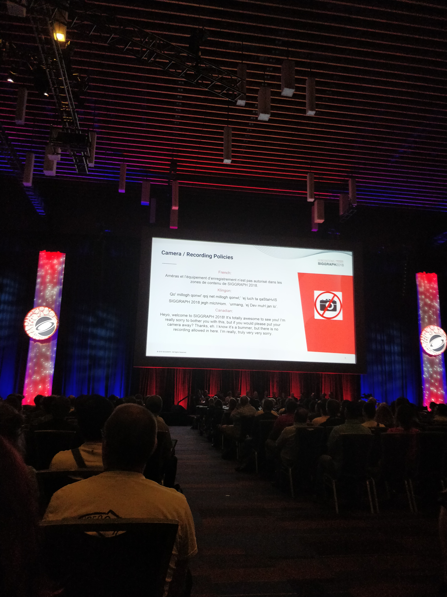
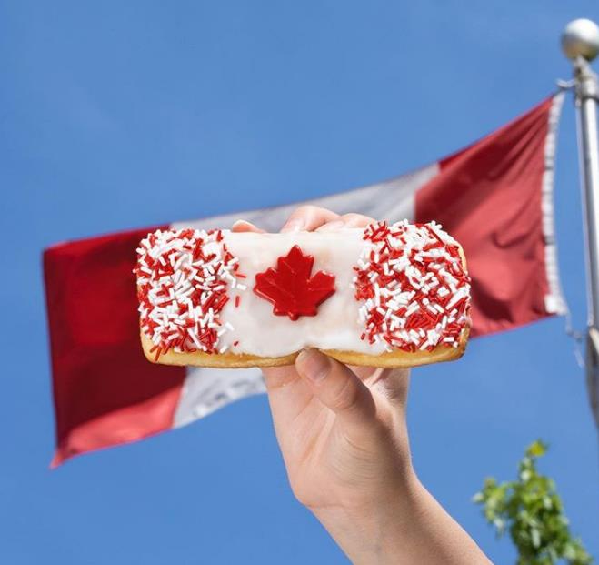
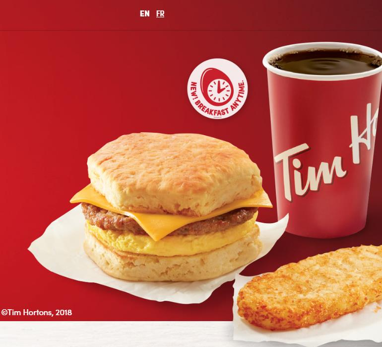

注：写一些不带个人身世（所以说是可以发表在公共场合）的东西。上中学的时候特别痴迷梁实秋的杂文，梁的文章常读常新，记得有一位语文老师跟我说过看似不经意的调侃的幽默是经历过了大风浪淬炼出来的，希望等我而立之年也能写出那样的文字。
Sorry, eh, I’m Canadian
Sorry是一个著名的梗。加拿大人是可以把sorry这个词用到几乎任何场合的：走路与别人擦肩而过，两人同时Sorry；跟陌生人打招呼问路，以Sorry开头……同样的道理，eh这个结尾语气词可以加在几乎任何句子的最后。 一图胜千言，上图：

加拿大人也是虚伪的，但是继承自英国绅士的这种虚伪被隐藏得非常好，以至于我一年以后才意识到，举个例子：几乎所有的本地人都表示萨斯卡通是一个让人来了就不想走的地方，但是有趣的是这么一个“非常受人欢迎”的迁入人口却并不多；再比如萨省首府里贾那的议会大厦是在预计2020年里贾那会达到100万人（数字存疑）规模的基础建成的，然而从2018年的形势来看，除非是加拿大别的省全部被核覆盖，实在想不出来怎么在两年之内搬80万人过去……所以其实你看，大家都是用嘴说话但是用脚投票的嘛。
虽然我还没有踏上美国的国土，但是在加拿大的三年加拿大人黑美国人的梗听了特别多；总结一下无外乎美国人粗鲁和自以为是，自从Trump上台以后又多了一个黑点。不知道是否是出于政治正确的原因，我认识的几乎所有加拿大人都觉得Trump不可理喻，只有一位小哥指出Trump是美国总统，所以一切从美国利益出发是可以理解的；几乎所有加拿大人在知道我要去美国以后都会冒出一句“States, why states?! you are gonna live with Trump, that guy, you know?!”。加拿大人对于美国人有一种天生的傲慢，言谈举止透露出一种“你才是美国人，你们全家都是美国人”的感觉。当然这与加拿大的历史是分不开的：当初的说着英语法语各种语的保皇党们为了不被美国“解放”（美国人民觉得除了美国以外世界所有人民都生活在水深火热之中，南北统一以后发现北边居然还有在邪恶的英国统治下的穷苦劳动人民，必须把他们解放出来），联合起来抗击美国的侵略，结果是加拿大人（实际上主要是英军）抓住一波timing极限反杀，火烧白宫，迫使美国重新坐在了谈判桌前，这也是加拿大国家认同感的开始——始于“只要你不想当美国人，你就是加拿大人”。但是现在的加拿大人颇有一种没落贵族的感觉，守着自己引以为豪的全民免费医疗、公立教育和极小的贫富差距，欣赏（看戏）Trump带领下美国的的跌宕起伏，但是又透露出贵族没落的不甘：曾经有一个加拿大人很诚实地告诉我说为什么提到加拿大大家只知道Justin Bieber呢，因为我们也没办法呀好莱坞产业太大了在加拿大拍电影根本不赚钱。
Vancouver is not the real Canada
所有的移民加拿大的广告大多会放上一些蓝到不真实的天，绿到刺眼的草，红到张扬的枫叶——这些也确实没有错，但是能把这几张图片无缝衔接滚动播放一年的地方只有温哥华周围，因为真实的加拿大日常其实是这样的（网上随便抓了一张）
冬天有多长呢？正应了一首歌，每天的日子大约在冬季，不是在冬天就是在迎接冬天的路上。“柳絮因风起”大概是从八月底开始的（卡尔加里已经下过2018年“第三季度”的第一场雪了），而踏青赏花却要等到四月底——只需要一场雨，第二天起来世界就换了一个色调，春雨贵如油在这里差不多是春雨就是催化剂。
冬天有多冷呢？从通勤的角度来说每个月有一半的时间早晨起来第一件事是扒车；从车的角度原地热车十分钟以后变速箱还是会冷保护，相比瑟瑟发抖坐在冰箱里开车，什么原地热车发动机积碳见鬼去吧；从感受来说，到了加拿大我才知道原来气温和体感温度完全是两回事：五级大风+-30℃的低温体感温度能有-40℃到-50℃，对于想体验这是什么感受的各位看官，我只希望你们不要体验就好了……
实际上大多数技术移民的人是不会去温哥华的——加拿大的IT产业主要在安大略的多伦多和魁北克的蒙特利尔，工业制造也基本不在温哥华；没有特别多钱的投资移民也基本去了边远省份；那么剩下的就是一些真·有钱人才会去温哥华了。相传温哥华的Richmond是因为里面住的都是rich（这当然是杜撰的），但是据说温哥华早高峰最不堵的地方也是Richmond，因为那里的人们是不需要上班的。
The real Canadian Tim Hortons
加拿大人的国民自觉性大概是我见过的最高的了。衣食住行，只要是本土的牌子，无不会写上"Real Canadian"或者"Proudly Canadian"。然而有一个叫Tim Hortons (Tims)的牌子例外，大概因为Tims在某些场合完全可以代指加拿大了。
在加拿大公路自驾游，经过的无数甚至不到万人的小镇子，可能没有KFC，没有麦当劳，但是有两样东西是一定会有的：加油站和Tims。加拿大人的早晨一般都开始于一杯“double double”和一块甜甜圈或者羊角包。“double double”是国境线以北的人们才会理解的黑话，意思是double sugar and double cream。大概是这里极端寒冷的气候使得人们的味觉都退化了，我一直觉得加拿大人对甜是不是有什么误解——咖啡double double基本成了咖啡味儿的奶茶，甜甜圈和羊角包因为照顾到有些喝黑咖啡的苦主要做的非常甜，以至于单独吃它们会甜到你怀疑人生。七月的时候加拿大国庆节，Tims会推出一款国庆特别版的甜甜圈，网上抓了张图，长这样

红的白的是糖霜，下面白色额是糖浆，后面那个面包本身也是甜的，各位看官随便感受一下。
初到加拿大的时候吃了几顿卡路里爆炸的早饭以后感觉我的中国胃和这国民第一煎饼果子连锁店实在是不搭，于是开始发掘Tims的菜单，试来试去觉得最符合我口味的可能还是下面这个combo

早上懒得做饭又因为是工作日所以跳过早饭一觉睡到中午直接吃brunch并不是一个选项，这个时候我会路过Tims，跟柜台大妈说"English sausage hash brown and a regular steeped tea"。Steeped tea是Tims里面对于不想喝咖啡，不想喝热巧克力，又不想喝茶包的人来说为数不多的选择之一了。Hash brown就是土豆饼。
Octolingual and illiterate
Octolingual说的是我硕士老板，illiterate是我硕士老板说我。
第一次知道我的老板会八门语言的时候我下巴差点没掉下来，这个时候我特别想去拉他去知乎回答“会X门语言是一种怎样的体验”，其实他已经告诉过我答案了“把我扔在地球上的任何一个角落我都能活下去”。
我素来都是羡慕出生在欧洲的人们的，天生就是bilingual甚至是trilingual。前阵子有一个厄瓜多尔的使团来到我们组访问（厄瓜多尔说西班牙语），当时配了一位英西翻译负责把我们说的（各种口音的）英语翻译成西语。使团走了以后我们组的意大利妹子非常兴奋地说“我虽然不会说西语但是他们说的每句话我差不多都能理解”。是呀，西语法语意大利语这些拉丁语族的语言某些部分都是非常相似的。multilingual的好处不仅在于能听懂多门语言，甚至还能对写作产生影响。想起来上周组会的时候，老板提到合成形容词为什么要加hyphen的时候是这么开场的“如果你们会德语的话……”
英语非常烂的我有这这样一位picky的老板自然没少吃瘪，我至今记得第一次看我老板给我改的材料我恨不得羞愧到找个地缝钻进去——几乎每一个句子都有问题，从punctuation，到hyphen/em-dash/en-dash（一度以为我老板长了双写轮眼，这三种短横的长度都能区分开来），到介词和冠词，让我感觉我人生的前20年几乎没有学过英语；计算机系另一位教授也在给我的评语中建议我去上一门语言课。经历过一系列让我羞愧难当的事情以后我决定好好补习一下我的英语。当时看到有一位老师（Mrs. McWhinney）在组织一个迷你的语法温习课，就报名参加了。不得不说native speaker教第二外语能很敏锐抓住国际生常犯的错误，第一节课讲punctuation的时候成功加深了我前20年确实等于没学过英语的感觉……McWhinney夫人发给我们的笔记我现在还会时常拿出来温习，常读常新。顺带提一句，Mrs. McWhinney的言谈举止无不透露出一种风韵犹存的优雅。后来去她家——一栋一看就知道非常贵的别墅——做客party，才知道她是副校长的夫人（怪不得？）
题外话，我觉得适应Canadian English大概是这些年我写作遇到的最大的问题了。Canadian English实则是一种发音接近美音拼写接近英式拼写，但是很多用词又和英国不一样的语言，以至于傲慢的英国佬提到英国人移民加拿大居然需要考雅思的时候说“Those Canadians they don’t even know how to speak English, and they want to test our English?!”
番外：关于做饭的一些小心得
不能说在这方面我有多专业，撷取一二仅供各位参考。如果我这里面有哪条建议能给看官的生活带来一些改进，那也是很值得的。如果有不妥之处也希望各位大厨评论区不吝赐教。
-
一些比较肥的牛肉拿盐，胡椒腌一下然后在平底锅上煎，味道出奇好；
-
“三汁闷锅”的“三汁” = 番茄酱+黄豆酱（我们这里方言叫酱豆）+耗油，按照1:1:1即可；
-
实际上好吃的菜很大程度就是取决于香料，香料真的是人类非常伟大的发明。我常用的调味料：十三香（比较懒的时候用来代替各种香料），耗油（素菜会放），豆瓣酱/酱豆（酌情放），洋葱（用来代替小葱炝锅，这个技巧是现任房东大哥告诉我的，因为这里的小葱没有葱味儿），四川青花椒，还有一种中超卖的比较好用的干辣椒（多试一试就知道有的牌子的干辣椒确实还不错），姜/蒜（百搭）；
-
但是更牛的人可以只靠刀工和火候把食材本身的香味激发出来，这就要常年的摸索/研究了。梁实秋有一本散文集叫雅舍谈吃，可以找来研究一下；
-
做饭做的好不好吃主要是肯不肯花时间，比如很多肉类先滑/炸再炒会比直接炒好吃；
-
煮饺子/面条可以凉水下锅，水开以后隔段时间放凉水——这样煮出来比较劲道；
-
番茄炒蛋加番茄酱有意想不到的惊喜；
-
炒绿叶蔬菜要用大火；
-
很懒的时候咖喱炖一切也是很下饭的。咖喱首推日式咖喱，不要买印度咖喱；
-
高压锅是人类厨艺进步的阶梯。猪蹄，排骨都可以往里扔；
-
烤箱同理。羊腿腌一下裹上锡纸放进去烤，除了羊腿本身特别贵以外想不出来这道菜的缺点；
-
空气炸锅做出来的口感确实可以比较接近油炸，唯一的缺点是清洗起来比较费劲（据说空气炸锅是要用洗碗机洗的，然而因为我们懒得清洗洗碗机……所以从来没用过……）；
-
这是听别人的段子：什么腰子之类的东西没有耐心处理干净做千万不要买，否则煮出来就成了开水煮尿了——嗯其实这并不是段子；
-
知乎上有个帖子，有提到如何用老外的食材做出来中餐的味道，一时半会找不到了，感兴趣的看官可以去查查，全是干货；
See you Canada!
最后修改于 2019-02-15